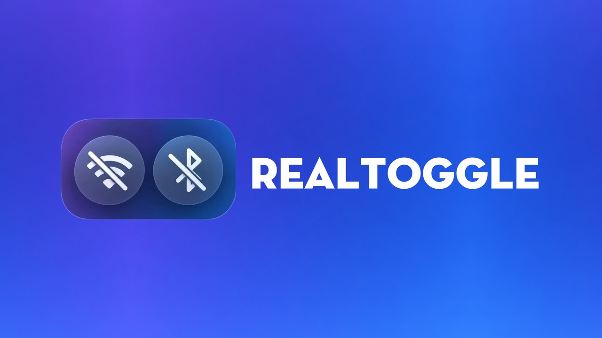

RealToggle
Phiên bản 0.1.5 · iOS 15+ · đã thử trên iOS 17 (Roothide)
Chạm vào Wi-Fi hoặc Bluetooth trong Trung tâm điều khiển để tắt hẳn, thay vì chỉ ngắt kết nối tạm thời.
- Chạm Wi-Fi hoặc Bluetooth trong Trung tâm điều khiển là tắt hẳn, trong Cài đặt cũng tắt theo
- Chỉ áp dụng khi tắt, chạm để bật vẫn như bình thường
- Trong Cài đặt chỉ có công tắc bật tweak và nút Respring
Nhật ký thay đổi
Phiên bản 0.1 16/10/2026
- Ra mắt trên kho Realm iOS
- Chạm tắt Wi-Fi và Bluetooth trong Trung tâm điều khiển là tắt hẳn
- Sửa lỗi đôi khi bật Wi-Fi hoặc Bluetooth thì tự tắt lại
- Thêm icon cho tweak và phần Cài đặt